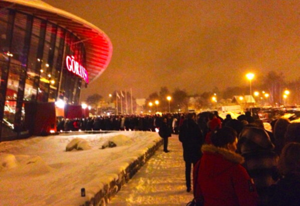
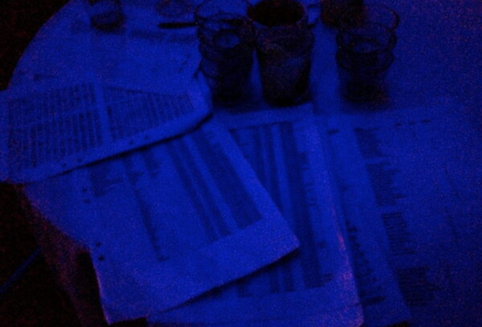
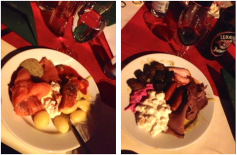
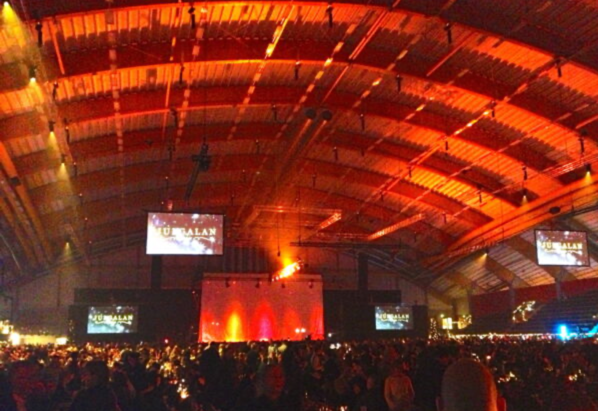
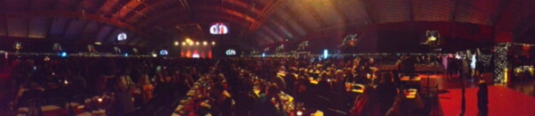
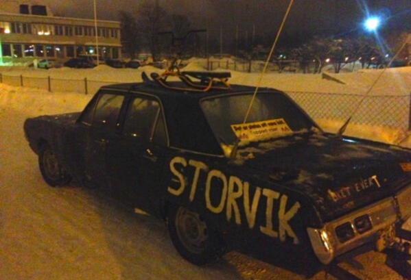

Ja då har man besökt Julgalan 2012 i Sandviken på Göransonska Arenan. Var det en ära? Njaaa, knappast. Tyvärr skulle det visa sig vara en rätt oproffsig tillställning. Vi tar det från början!
4500 personer hade snabbt bokat men någon hade tänkt till… Men hade lite otur eller nått?
Alla hade tydligen fått en rekommenderad tid att anlända detta evenemang (dock inte vi) men man hade inte skickat ut några biljetter utan alla skulle ha med sig sitt bokningsnummer istället och “bara” behöva uppge sitt namn. Här började det gå lite snett.

Vi anlände till Sandviken ungefär 18:15 och kunde snabbt konstatera att parkeringen utanför arenan redan var i kaos och att dom flesta människor hann komma i rask takt mycket fortare än vad folk släpptes in. Det var dessutom på tok för dåligt skottat och massor med bilar inparkerade utan några vakter som försökte styra upp parkerandet. Det blev snabbt mycket långa köer in. Dessutom fick då många springa omkring och leta varandra för att få tag på hur man skulle ta sig in. Vad berodde då detta på?

Jo här hade man satsat på tekniken - REJÄLT! Folk släpptes in i små grupper för att hänga in sina kläder i garderoben vilket flöt på skapligt men sen kom det roliga. En drös små söta tjejer i tomteklänningar hade fått till uppgift att stå med en liten ficklampa och måååånga låååååånga datalistor i mörkret och försöka hitta folks bokningar så att dom sen kunde bli ledda till rätt sittplats. Kändes modernt å fint (obs ironi). Snacka om stoppkloss! Inte konstigt det tog sån tid att få in alla människor…

Maten funkade dock bra att hämta även om det skulle visa sig att efterrätt och kaffe va skapligt besvärligt att få tag på. Lagom till detta han förshowen dra igång med en rejäl förvarning om hur ljudbilden i hela stora Göransonska Arenan skulle bli… Det lät INTE bra i större delen av lokalen. Att satsa på endast två riktigt stora högtalarpelare intill scenen var inte något som gav en bra ljudbild i en så där stor lokal. Man försökte kompensera med att höja volymen men tyvärr var det mest diskanten som bar och det blev snabbt plågsamt.

När sen riktiga showen började visade sig ljudbilden förbli rätt jobbig. Nära scenen lät det bra men inte i resten av lokalen. Men artist efter artist gjorde mycket bra ifrån sig trots detta. Men…. Fullkomligt underbart komiskt nog började konfransiererna med att i några glada väcka-publiken-övningar konstatera att Stockholmare inte var populära någonstans och sen klev ingen mindre än Lasse Berghagen upp på scen å drog loss med “Stockholm i mitt hjärta”. Vi fick också höra bland annat Lasse göra “En kväll i juni”, EMD sjöng hits som “Jennie Let Me Love You” och “Baby Goodbye”, Molly Sanden sjöng “Why Am I Crying”, Danny körde låtar som “Amazing” och “In The Club”, Vi fick lite covers typ Lady Gagas “Bad Romance” och Peter Jöback sjöng en fantastisk “Hallelulja” och “Jag kommer hem igen till jul”. Vänta nu… Visst var det Julgalan man kallade detta? Tack Peter Jöback för att du åtminstone rev loss en vacker jullåt!

Till slut var det då dags för Loreen att kliva på och lyfta taket med sin mäktiga röst. Vad händer då? Jo då börjar man plötsligt jaga bort alla som sitter i närheten av scenen i andra änden av lokalen och bär ut allt som står på borden PRECIS när galan skulle nå sin höjdpunkt! Inte konstigt folk blev rätt förbannade inklusive jag själv. Hänvisad till att “leta reda på en annan plats” gjorde inte folk gladare. Det skulle också visa sig att mingelborden som då fanns som alternativ OCKSÅ stod i vägen för man måste ju bära ut alla stolar och bord nånstans.
Vilken hysteriskt oproffsig tillställning… Synd på alla dessa duktiga artister!!!
Julgalan 2013 i Göransonska Arenan? Nej tack!!!
Men en stor eloge till Storviksraggarna som bjöd på ett gott skratt efteråt… :)
